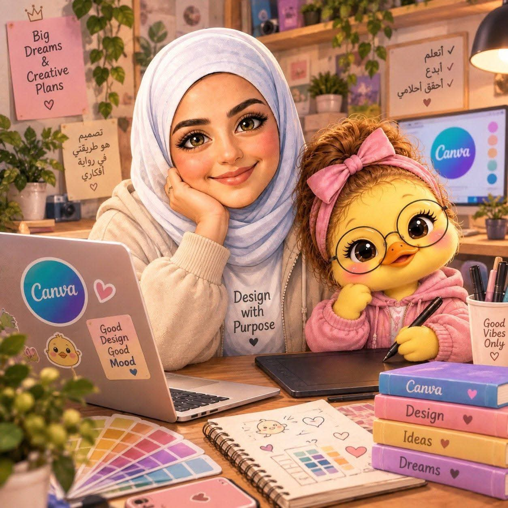
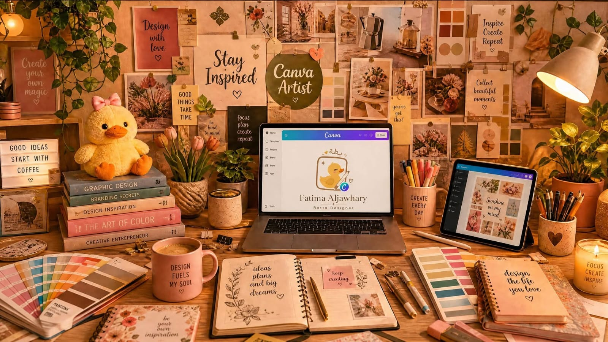
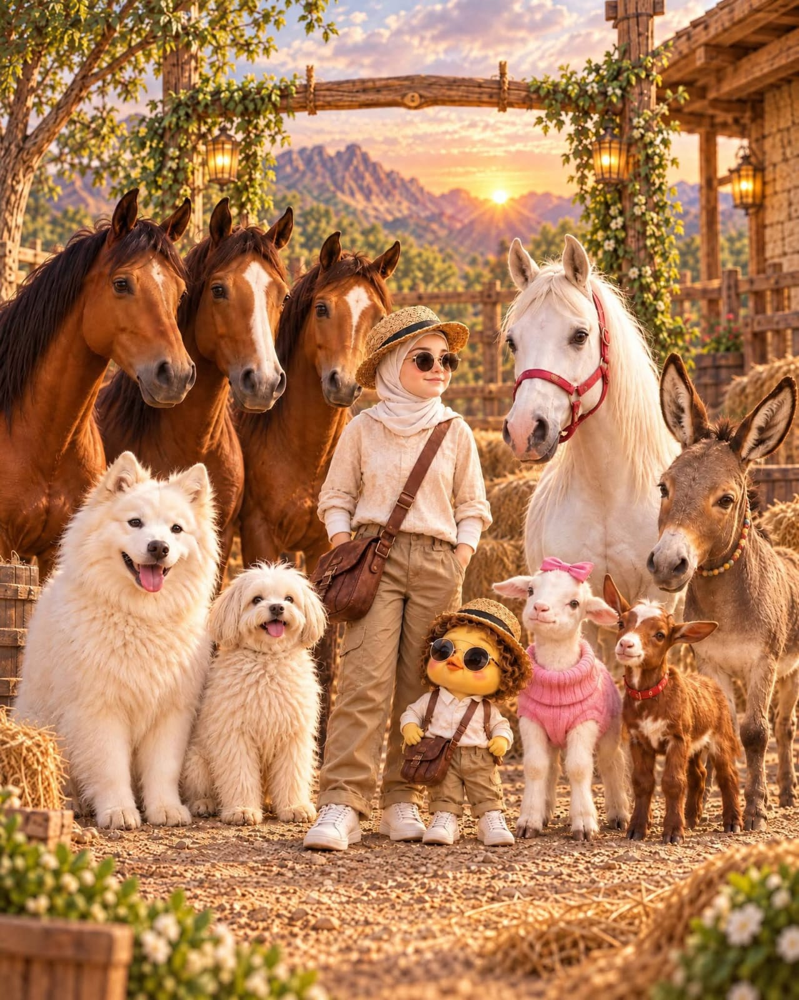
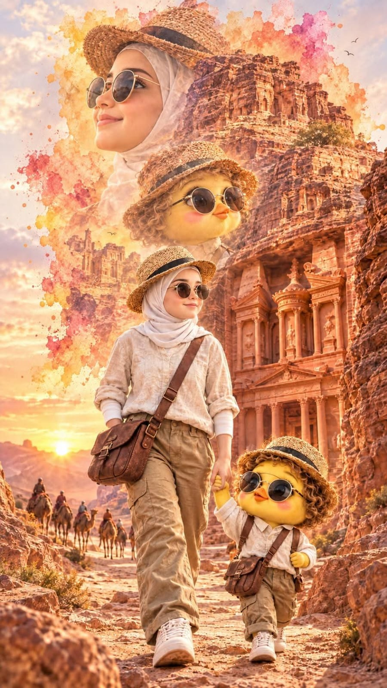
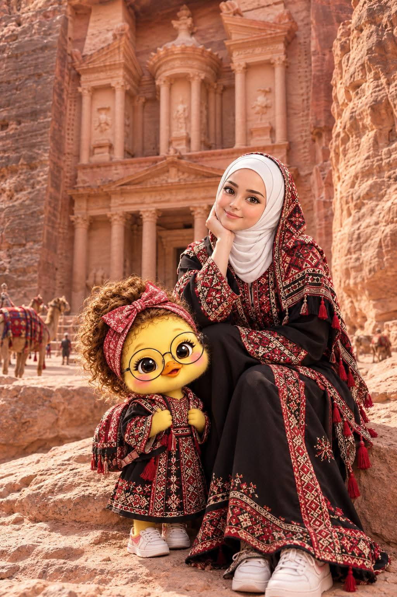

فاطمة الجوهري وتجربة مختلفة في صناعة المحتوى بالذكاء الاصطناعي

فاطمة الجوهري
صانعة محتوى تهتم بتوظيف الذكاء الاصطناعي في صناعة الفيديو والصور

مع التطور السريع الذي يشهده مجال الذكاء الاصطناعي، بدأت تظهر طرق جديدة ومختلفة لصناعة المحتوى الرقمي، ومن بين هذه التجارب تجربة فاطمة الجوهري، التي تستخدم أدوات الذكاء الاصطناعي لإنشاء صور ومقاطع فيديو تحمل طابعاً إبداعياً ومختلفاً.
وتدور بعض أعمالها حول شخصية تحمل اسم «بطة»، تظهر في مجموعة من المشاهد والمغامرات المصممة باستخدام تقنيات الذكاء الاصطناعي، في محاولة لدمج الشخصيات الخيالية مع أماكن ومعالم معروفة في الأردن.
من العقبة إلى البترا... الأردن بطريقة مختلفة
من الأفكار التي يمكن ملاحظتها في هذا النوع من المحتوى وضع الشخصيات المولدة بالذكاء الاصطناعي داخل مواقع ومعالم أردنية، مثل العقبة والبترا وغيرها، لتظهر هذه الأماكن في مشاهد خيالية لا يمكن تصويرها بالطريقة التقليدية.
هذا الأسلوب يفتح مجالاً واسعاً للخيال، حيث يمكن للشخصية الانتقال من مكان إلى آخر، أو الظهور في سيناريوهات ومواقف مختلفة، مع الحفاظ على الهوية البصرية للمحتوى.
نماذج من المحتوى



صناعة محتوى تتجاوز الصورة التقليدية
ومع انتشار أدوات توليد الصور والفيديو، أصبح بإمكان صناع المحتوى تجربة أفكار كانت تحتاج في السابق إلى ميزانيات كبيرة أو عمليات إنتاج معقدة.
وتُظهر هذه التجارب كيف يمكن استخدام الذكاء الاصطناعي كأداة إبداعية تساعد على تحويل الأفكار والشخصيات إلى مشاهد مرئية قابلة للمشاركة على منصات التواصل الاجتماعي.